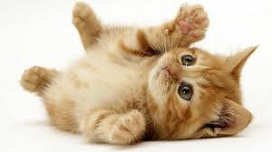
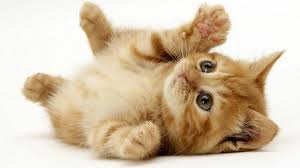

Pets are very Cute and Cuddely, Some are crazy, some are lazy but they all keep you company. If you are sad angry or just tired the animals are always there; As long as you love them they'll love you. If you own a dog as a pet, you should exercise it at leased once per day. If you don't have the time to exercise your pet you should buy a pet that does exercise in it's own time e.g cat, bunny or bird/parrot.
Some organisations take care of unwanted pets such as RSPCA. RSPCA is an organistaion that gives animals a second chance. They help wounded, wild or unwanted animals and helps them get back on their feet. You can donate and make a difference in just 5mins. click HERE to visit their website now.


 



Music
Images